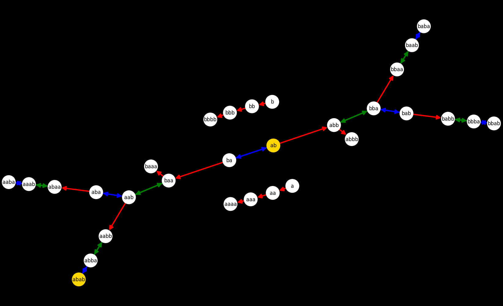
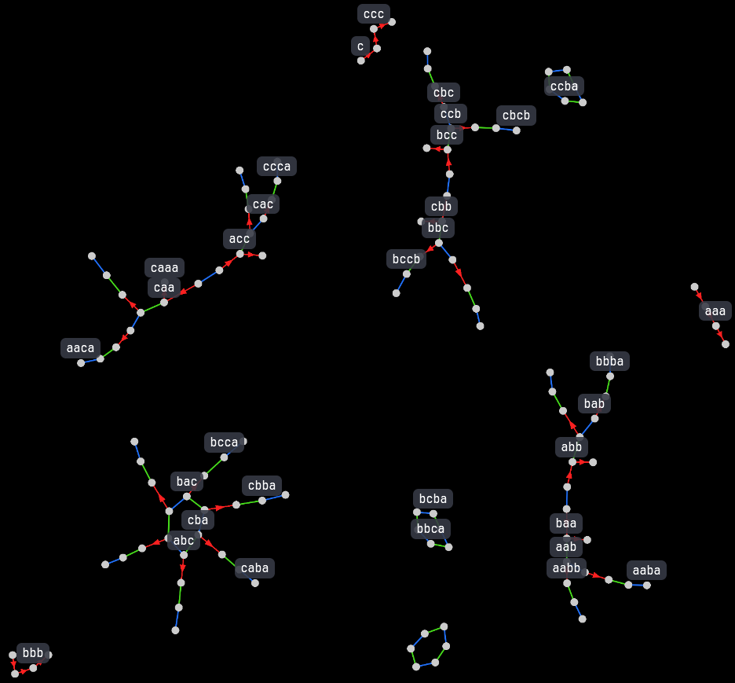

Some days ago I finally finished coding the first stable version of the interpreter for { Stackade }, my programming language.
Getting tired of testing solutions for increasingly complex and language-specific problems, a rather "simple" problem (or so I thought) piqued my interest, one of a more abstract nature.
A simple problem
The most natural structure you can work with in Stackade is the Stack, which is basically a pile of elements and nothing more.
From now on, picture it as a string like "cba", where "c" is the downmost element and "a" is the upmost, going left to right.
First things first, I wanted to know whether it was possible to start with the string "ab" and end with "abab" using a sequence of these three rules:
dup: duplicates the last character, so "ab" becomes "abb";swap: swaps the last character and the one before it, so "ab" becomes "ba";rot: swaps the last character with the third to last, so "abcd" becomes "adcb";
How hard could it be? I thought that two or three steps could make for it, but when trying by hand, I got a solution double as long:
- ab -> ba (swap)
- ba -> baa (dup)
- baa -> aab (rot)
- aab -> aabb (dup)
- aabb -> abba (rot)
- abba -> abab (swap)
My concern is not finding a solution for this particular problem only; I'm interested in finding the more efficient solution and demonstrating it's the one, for any instance of this kind of problems.
From an even broader perspective, maybe every simple enough problem definable with a "state" to reach from a starting one, plus a set of rules to go from a state to the possible next ones can be solved in the same way.
The state space
In computer science, a state space is a discrete space representing the set of all possible configurations of a system.
For example, the "ab" -> "abab" problem lives in this "state space" which has 3 "islands", or more appropriately disjointed classes, meaning that if you start from a state inside one class, you will never be able to reach your desired end if it's inside another class. For example, you can't reach "aaa" from "ab".
- red arrows =
duprule - blue arrows =
swaprule - green arrows =
rotrule
For visual clarity I have omitted the rules that produce the same state to which they are applied.
Now let's write strings with three different letters (a b and c) instead of just two and see what happens.
This state space contains fully the previous one (its main structure can be seen in the lower right corner), and it's more than thrice as big with the new emerging structures!
Notice the green and blue rings: they are classes made up of the longest strings possible in each iteration, where each element is linked to the next one with either swap or rot.
These rings couldn't be made using the dup operation (shown as red arrows), because dup does not have an
inverse operation (at least we haven't defined one), while both swap and rot have one, being the inverses of themselves.
But what if the strings were longer than just 4 letters? would there be more disjointed classes, or a different structure altogether?
Here are the state spaces for strings made with a, b, c and long at most 5, 6, 7 and 8 letters.

The complexity increases dramatically with each iteration, together with the number of disjointed classes.
The generic problem is a logic labyrinth
As stated above, every problem compatible with our idea of solution have common features, strikingly similar to the structure of a labyrinth:
- a set of states (the labyrinth), all with the same features, for example being a string of four characters at most;
- an initial state (the entrance);
- a "solved" state (the exit door);
- a set of rules to transition (the corridors) from a state to another. Note that some transitions (the walls) could be impossible to make. Think about the "ab" -> "abab" example: we could not have applied
rotto "ab", because it's only two characters long.
Unsurprisingly, the simplest problem solvable with the system we are building is finding the shortest exit path of a labyrinth, provided that the map was properly encoded as a network of nodes, because there's no computation of next states involved, only the traversal of already existing ones.
Coding it
Object Oriented Programming is the perfect fit for this project, because states can be build as objects storing particular data while sharing the same generic blueprint specified in their class. On the other hand, rules can be implemented as methods that compute the next state and connect it to the previous one, growing the network.